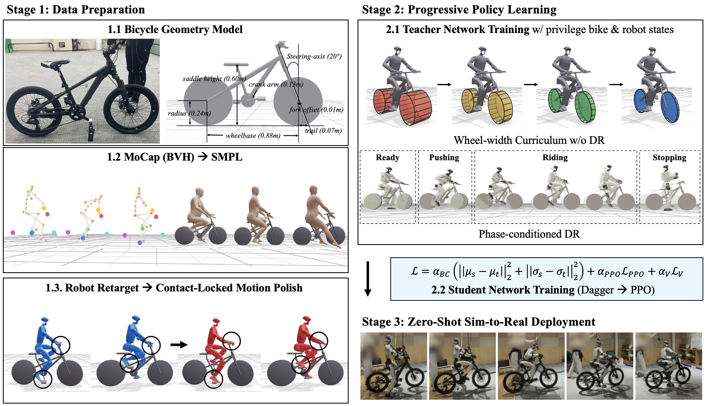
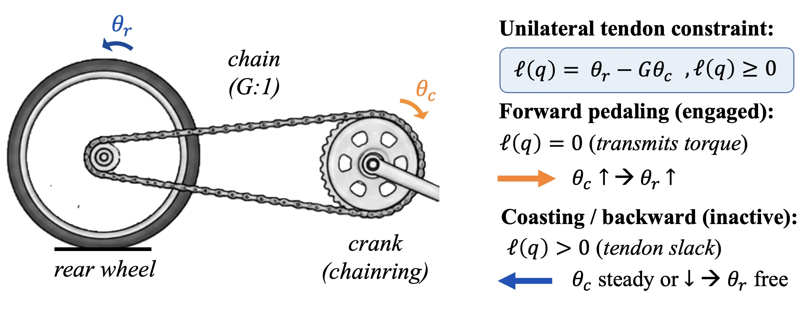
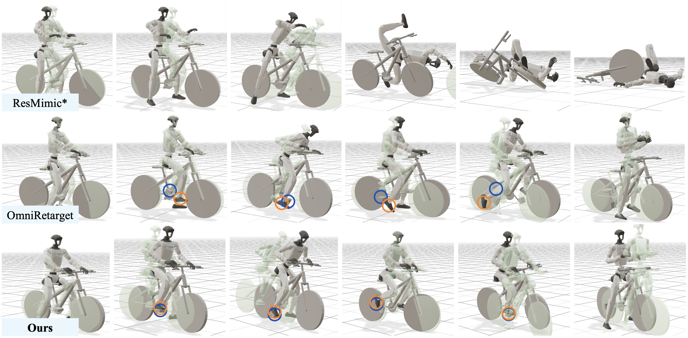

Stage 1
Contact-locked motion
Optical capture of rider and bicycle is retargeted to the G1, then polished so palms stay on the grips and soles stay on the pedal tops rather than nearby surfaces.
Learning Whole-Body Humanoid Bicycle Riding
A learning framework for riding an unmodified, unpowered bicycle with a general-purpose humanoid.
Bicycles are efficient, inexpensive, and entirely rider-powered vehicles, yet their operation requires a tightly coordinated combination of propulsion, balance, steering, and sustained whole-body contact. Unlike interacting with statically supported objects, a humanoid riding an unpowered bicycle forms a single dynamically coupled, underactuated system. BicycleMan combines contact-constrained reference motion refinement with a staged wheel-width curriculum, contact- and drivetrain-aware objectives, and phase-conditioned domain randomization. On a real Unitree G1 and an unmodified bicycle, the learned policy achieved short-horizon riding. In simulation, it completes the full sequence from launch to controlled stopping.

Optical capture of rider and bicycle is retargeted to the G1, then polished so palms stay on the grips and soles stay on the pedal tops rather than nearby surfaces.
A teacher first learns on tires narrowed from 30 cm to 3 cm without DR. Phase-conditioned randomization and DAgger→PPO student training follow after riding emerges.
The student uses only robot-side sensing, motion references, and contact phase. Propulsion and balance come from five breakable contacts: two hands, two feet, and the saddle.

| Method | Crank ↑ | Velocity ↑ | Pedal ↑ | Handle ↑ | Saddle ↑ | Final pos (m) ↓ |
|---|---|---|---|---|---|---|
| Baselines | ||||||
| OmniRetarget | 0.234 | 0.934 | 0.016 | 0.051 | 0.910 | 1.569 |
| ResMimic* | 0.018 | 0.101 | 0.000 | 0.000 | 0.109 | 7.885 |
| Ablations | ||||||
| Ours w/o phased DR | 0.453 | 0.436 | 0.250 | 0.545 | 0.480 | 6.056 |
| Ours w/o wheel-width curriculum | 0.166 | 0.235 | 0.162 | 0.255 | 0.241 | 6.864 |
| Ours w/o contact reward | 0.296 | 0.217 | 0.096 | 0.388 | 0.247 | 7.244 |
| Ours | 1.015 | 0.942 | 0.908 | 1.000 | 0.939 | 1.429 |
Simulation metrics are seed-level means from the paper. Tracking the bicycle trajectory is not enough: OmniRetarget keeps saddle contact and velocity but barely pedals or holds the bars.

@inproceedings{bicycleman2027,
title = {BicycleMan: Learning Whole-Body Humanoid Bicycle Riding},
author = {Anonymous Authors},
year = {2027},
}